Evaluate each expression for both values of the variable.
Use the ordered pairs $(-3,5)$, $(3,5)$, $(-2,-4)$, and $(2,4)$.
Use the graph to describe the visible symmetry.
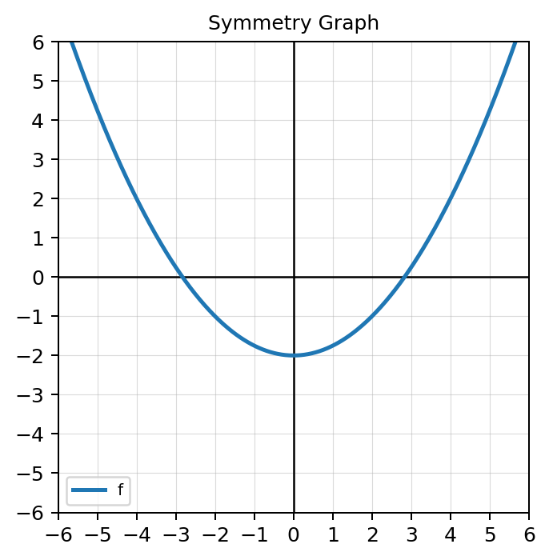
Complete each substitution.
Determine whether the function is even, odd, or neither. Show the $f(-x)$ test.
$f(x)=x^4-6x^2+1$
Use the graph to classify the function as even, odd, or neither. Explain your evidence using symmetry.
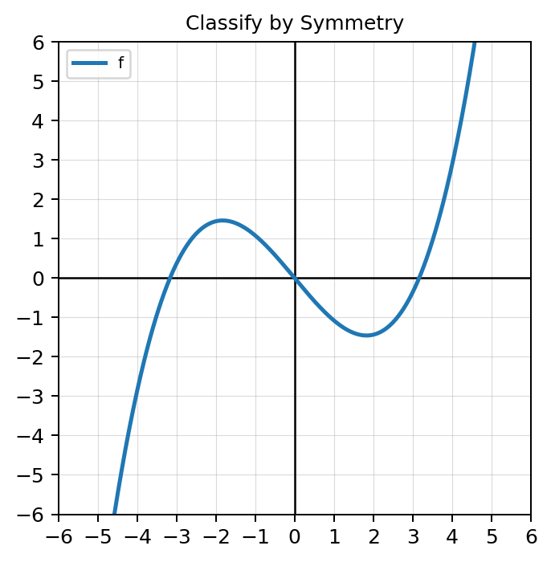
Spiral Review: Let $p(x)=x^2-5x+6$.
Formative Spiral: Simplify. Write answers with positive exponents.
A student claims $f(x)=x^5+x^3+x$ is odd because every term has an odd exponent.
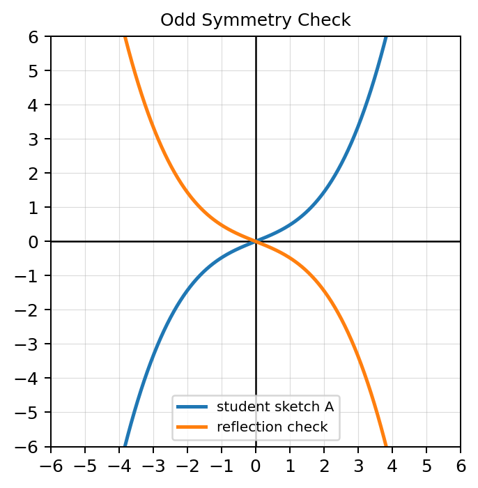
Create one polynomial that is even and one polynomial that is neither even nor odd. Justify both using $f(-x)$.
Spiral Review: A function has domain $[-4,6)$ and range $(-2,8]$.
Formative Spiral: A student says $(2x^3)^2=2x^6$.
Evaluate each function at the given input.
Use the graphs of $f$ and $g$.
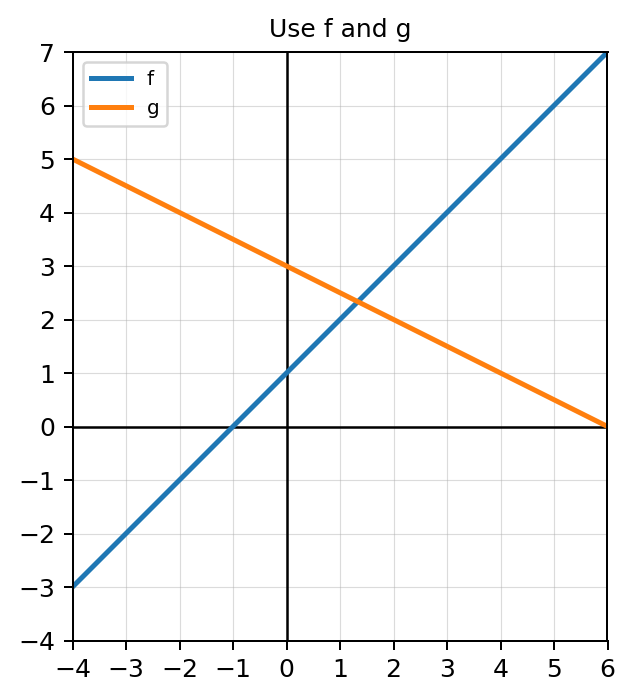
Use the table.
| $x$ | -1 | 0 | 2 |
|---|---|---|---|
| $f(x)$ | 4 | 1 | -3 |
| $g(x)$ | 2 | -5 | 6 |
State the value that makes each denominator zero.
Let $f(x)=x^2-4$ and $g(x)=3x+1$.
Let $f(x)=x+2$ and $g(x)=x^2-1$.
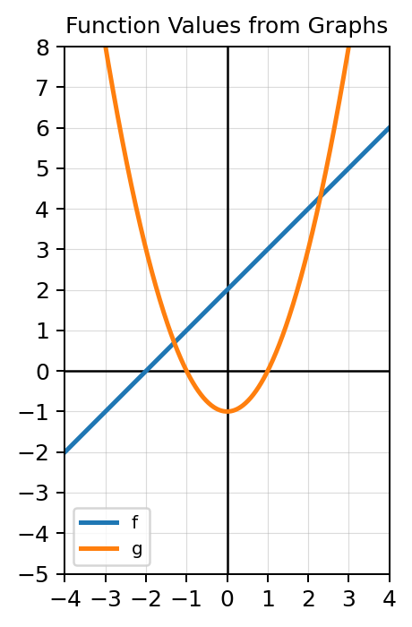
Spiral Review: Translate the solution set $-3\le x<5$ into interval notation and describe how the endpoints would appear on a number line.
Formative Spiral: Rewrite each expression using rational exponent notation.
The expression $\dfrac{x^2-4}{x-2}$ simplifies to $x+2$.
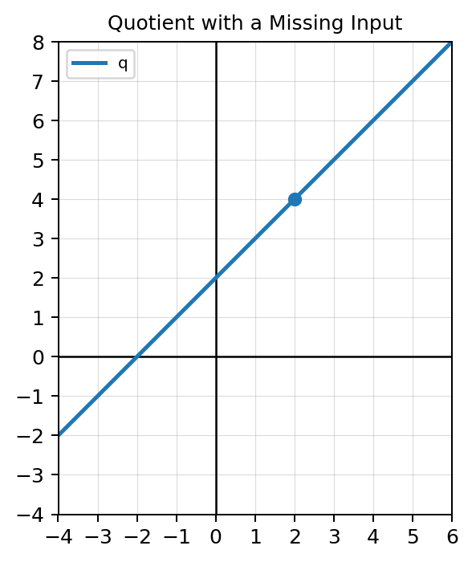
A student says the domain of $\dfrac{f}{g}$ is always the domain of $f$.
Spiral Review: Create a function with domain $[0,\infty)$ and explain why negative inputs are not allowed.
Formative Spiral: A student says $x^{1/3}$ means one-third of $x$.
Let $f(x)=2x+3$ and $g(x)=x-4$.
Use the table.
| $x$ | -2 | 0 | 1 | 4 |
|---|---|---|---|---|
| $f(x)$ | 5 | 1 | 0 | -3 |
| $g(x)$ | 1 | 4 | 0 | -2 |
Evaluate carefully.
Use the graphs of $f$ and $g$ to estimate $f(g(2))$. Show the two-step input-output path.
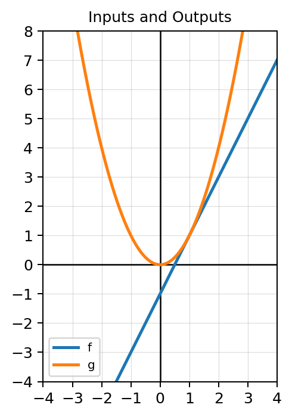
Let $f(x)=x^2-1$ and $g(x)=3x+2$.
Given $f(x)=\sqrt{x+2}$ and $g(x)=3-x$, use the graph to decide whether $f(g(5))$ is defined. Explain your reasoning.
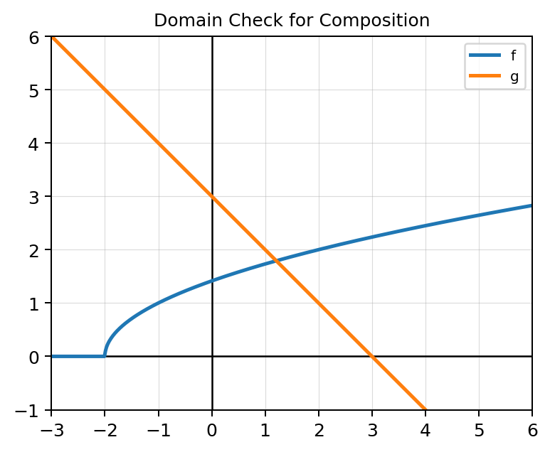
Spiral Review: Let $T(x)=2x^2-8x$.
Formative Spiral: Find the slope of the line through $(-2,5)$ and $(4,-1)$, then write an equation in slope-intercept form.
Let $f(x)=\sqrt{x}$ and $g(x)=x-4$.
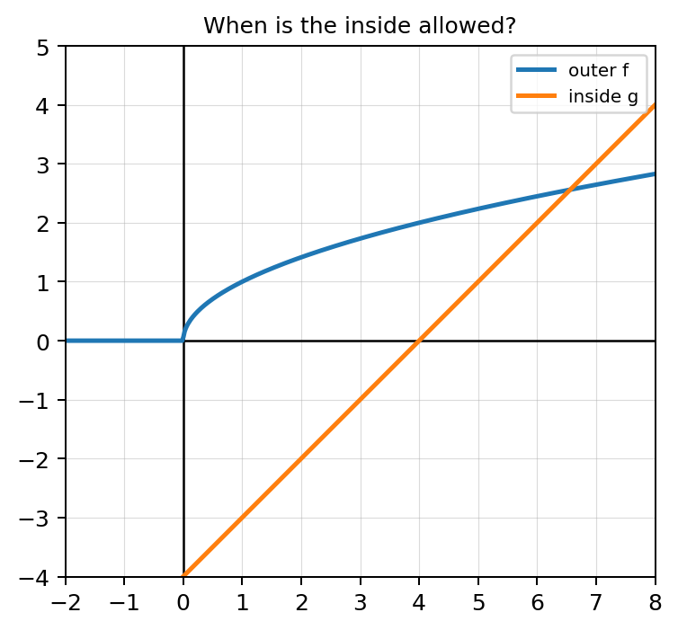
A student says $f(g(x))$ means the same thing as $(fg)(x)$.
Spiral Review: A graph has a hole at $x=2$, a filled point at $(2,5)$, and approaches $y=1$ from both sides. State $\lim_{x\to 2} f(x)$ and $f(2)$, then explain the difference.
Formative Spiral: Simplify and justify each step.
$\dfrac{(3x^{-2}y^4)^2}{9x^3y^{-1}}$
Find the slope between each pair of points.
Use the table to find the average rate of change from $x=0$ to $x=4$.
| $x$ | 0 | 2 | 4 |
|---|---|---|---|
| $f(x)$ | 3 | 7 | 11 |
Use the graph to estimate the slope of the line. Explain how you chose two points.
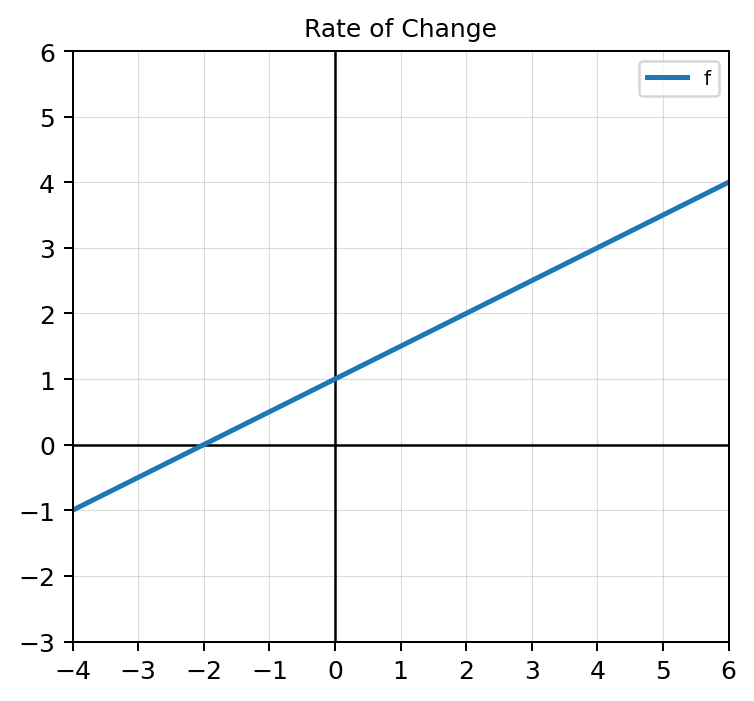
Simplify each expression.
For $f(x)=2x+5$, calculate and simplify:
$\dfrac{f(x+h)-f(x)}{h}$
Use the graph to estimate the average rate of change from $x=0$ to $x=4$. Interpret the result as a secant slope.
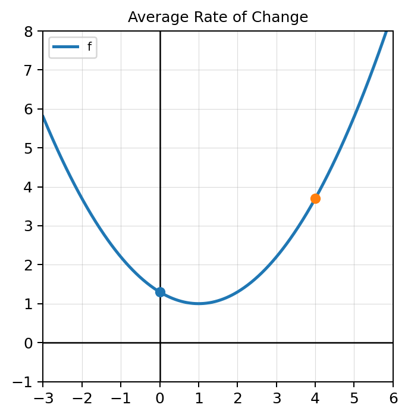
Spiral Review: Let $f(x)=x^2$ and $g(x)=x+3$.
Formative Spiral: Rewrite $\sqrt[4]{x^3}$ using rational exponent notation, then explain which number represents the root.
For $f(x)=x^2$, calculate and simplify:
$\dfrac{f(x+h)-f(x)}{h}$
Then explain what happens when $h$ gets very small.
The graph shows two points on $f(x)=x^2$ corresponding to $x=1$ and $x=1+h$ when $h=2$.
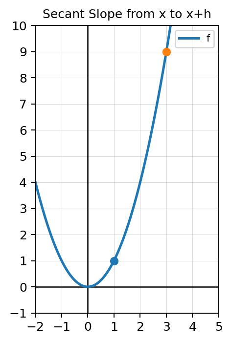
Spiral Review: A student solves $f(x)=6$ by finding $f(6)$. Explain the error and give a correct example showing the difference between evaluating and solving.
Formative Spiral: A line passes through $(2,-1)$ and $(8,11)$.
Solve each equation for $x$.
Use the graph of a function and its inverse.
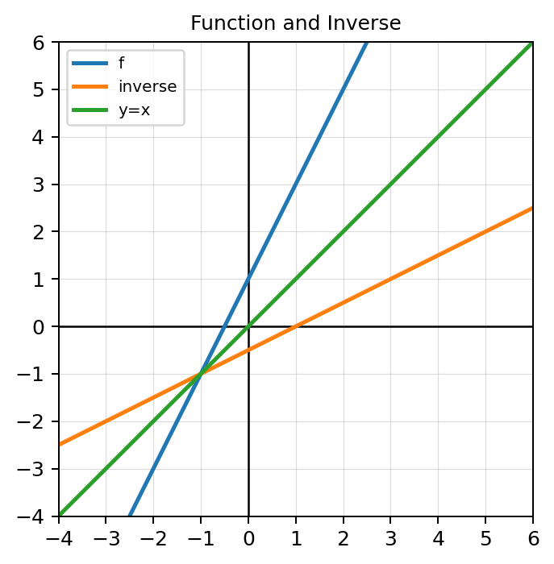
Use the table.
| $x$ | -1 | 0 | 2 | 5 |
|---|---|---|---|---|
| $f(x)$ | 4 | 1 | -3 | 0 |
Determine whether each set of ordered pairs represents a function.
Find the inverse of $f(x)=4x-9$. Show the switch-and-solve process.
Use the graph to decide whether the function shown has an inverse function without restricting the domain. Explain using the horizontal line test.
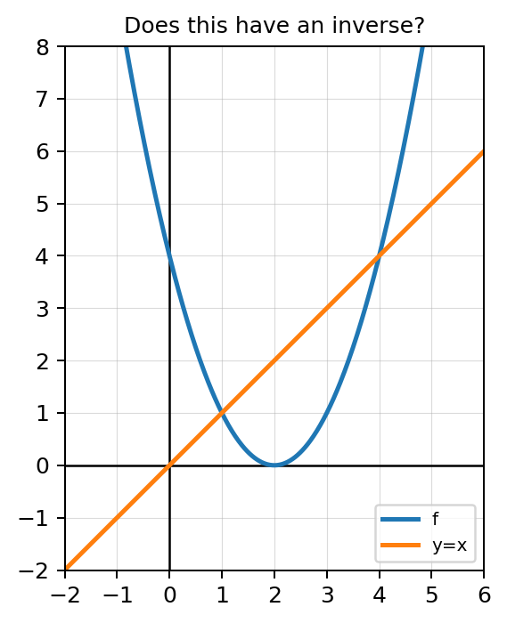
Spiral Review: For $f(x)=x^2+1$ and $g(x)=2x-3$, find $f(g(x))$ and state whether $g(f(x))$ would be the same expression.
Formative Spiral: Evaluate exactly.
The graph shows a function, its inverse, and the line $y=x$.
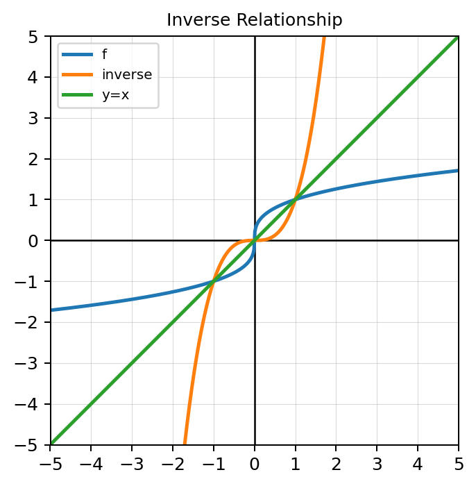
A student finds the inverse of $f(x)=\dfrac{x-2}{5}$ and gets $f^{-1}(x)=\dfrac{x+2}{5}$.
Spiral Review: Calculate and interpret the average rate of change of $p(x)=x^2-4x$ from $x=1$ to $x=5$.
Formative Spiral: A radical expression is defined by $r(x)=\sqrt{x-6}$.